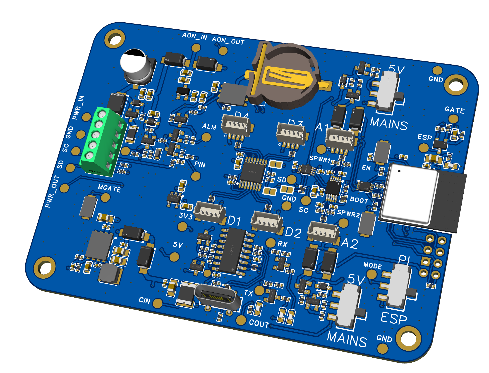
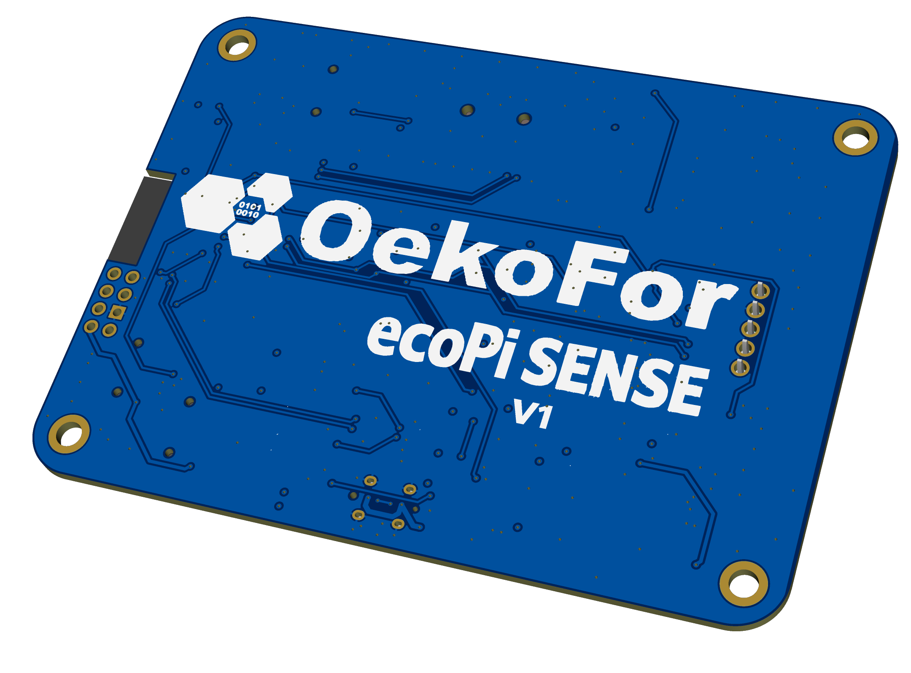

The problem
Biodiversity monitoring often relies on short field surveys or manual observations, which capture only a small snapshot of ecological activity. Passive acoustic monitoring can provide continuous insight into ecosystems, but many existing systems are either too expensive, too complex to deploy at scale, or unreliable in harsh field conditions.
As a result, ecological teams often struggle to collect long-term, high-resolution data on species presence and behaviour.
Why it matters
Sound carries a huge amount of ecological information. Birds, bats, frogs, and insects all produce acoustic signals that can reveal patterns in biodiversity, habitat health, and ecosystem change.
Reliable acoustic monitoring allows researchers to detect rare species, track population trends, and understand how ecosystems respond to environmental pressures. Making this technology more accessible enables conservation teams to monitor larger areas for longer periods and make better-informed management decisions.
Approach
ecoPi is designed as a complete monitoring system that connects field hardware, edge AI, and data interpretation tools.
Solar-powered recording units capture environmental soundscapes and process them locally using machine-learning models running on embedded hardware. Detection data is then made accessible through a browser-based interface where users can review detections, request audio clips, and validate results.
The system prioritises low-power operation, modular design, and simple workflows so that monitoring networks can operate autonomously in remote environments.
My role
I contribute to several core components of the ecoPi system, spanning both hardware and software. My work includes contributing to the design of the user interface dashboard, and designing and building ecoPi Lullaby, a custom Raspberry Pi HAT that integrates low-power management with an audio interface for passive acoustic monitoring in long-term autonomous deployments.
I also designed and built the ecoPi Sense module, which extends ecoPi with abiotic environmental data collection so temperature, humidity, and other site conditions can be interpreted alongside acoustic detections.
Dashboard snapshots
{kind=link}
{kind=link}
{kind=link}
ecoPi Lullaby PCB renders

.png)
ecoPi Sense module renders
{kind=link}

.png){kind=link}

Tools & technologies
Current status
More than 150 ecoPi units are currently deployed across Europe, Africa, Australia, and South America, supporting a range of biodiversity monitoring projects.
The network generates thousands of species detections every day, which are processed and delivered to users through the ecoPi dashboard. Researchers and project teams use this interface to explore detections, review audio clips, and interpret ecological patterns emerging from continuous acoustic monitoring.
Development of the system is ongoing. We continue to improve reliability in field deployments while adding new tools that help users interpret both acoustic detections and environmental data more effectively.